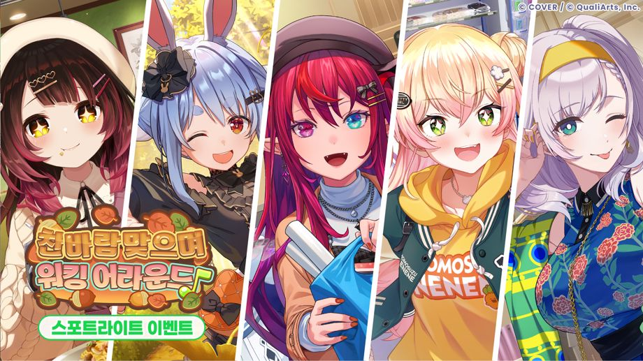
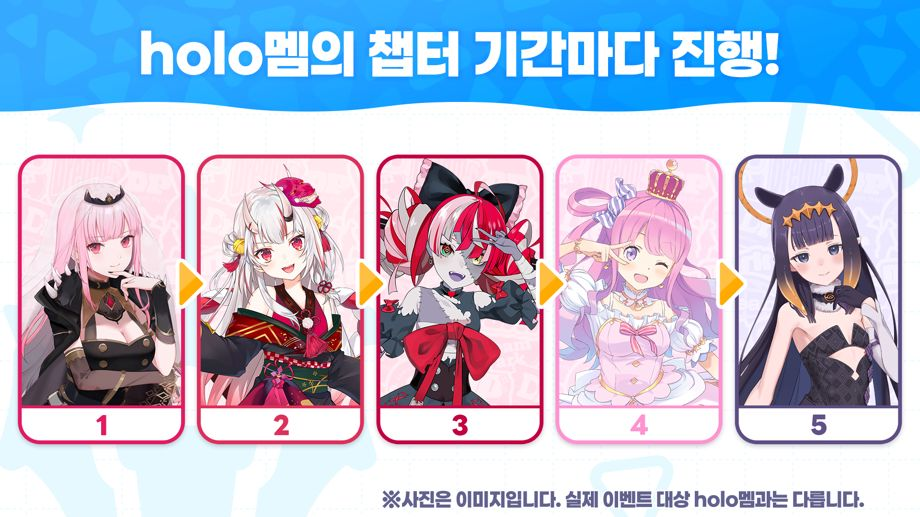
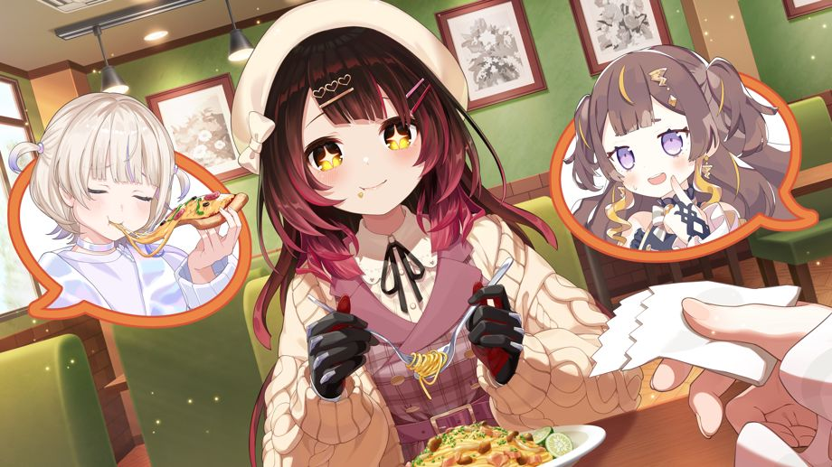
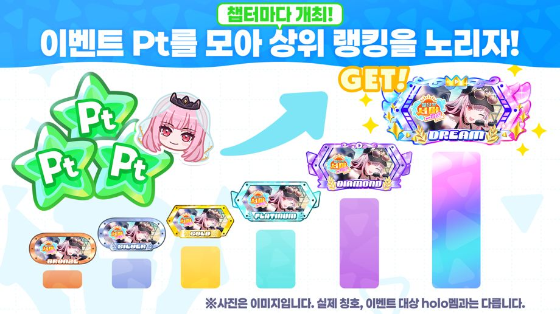
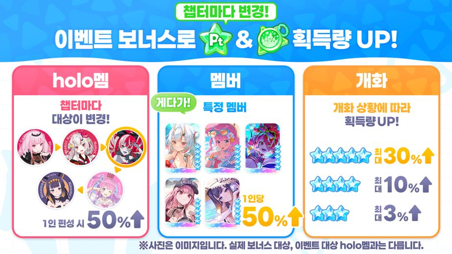
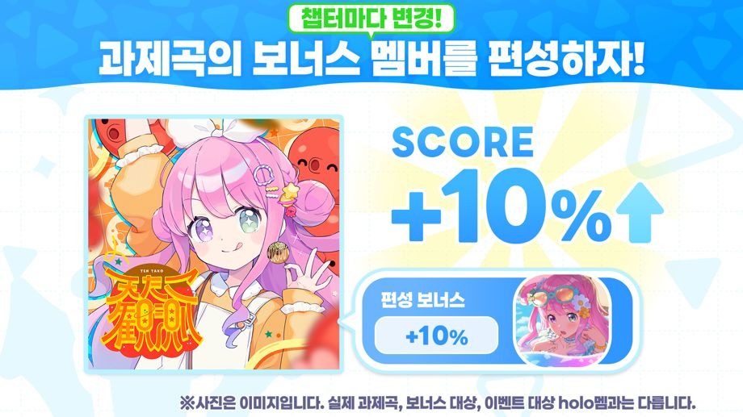
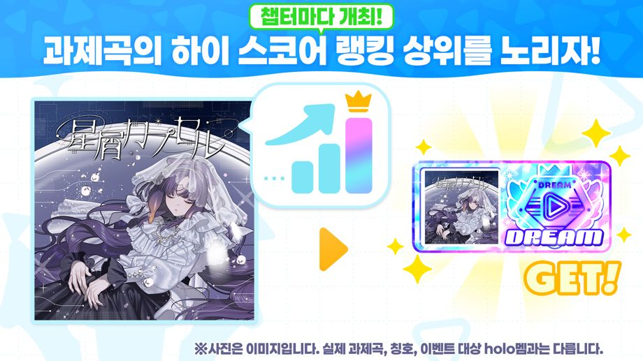

스포트라이트 이벤트 「찬바람 맞으며 워킹 어라운드♪」 개최!
◆참가 조건
메인 스토리 1장 4화 「Mythical Connection」 클리어
◆개최 기간
・이벤트 기간
2026-11-14 20:00:00,2026-11-24 19:59:59
・챕터 1: 로보코 씨
2026-11-14 20:00:00,2026-11-16 19:59:59
・챕터 2: 우사다 페코라
2026-11-16 20:00:00,2026-11-18 19:59:59
・챕터 3: IRyS
2026-11-18 20:00:00,2026-11-20 19:59:59
・챕터 4: 모모스즈 네네
2026-11-20 20:00:00,2026-11-22 19:59:59
・챕터 5: 파볼리아 레이네
2026-11-22 20:00:00,2026-11-24 19:59:59
◆결과 발표 기간
챕터 1:2026-11-17 12:00:00 ~
챕터 2:2026-11-19 12:00:00 ~
챕터 3:2026-11-21 12:00:00 ~
챕터 4:2026-11-23 12:00:00 ~
챕터 5:2026-11-25 12:00:00 ~
결과 발표 기간 종료는 모든 챕터가 공통으로 2026-11-30 19:59:59까지입니다.
◆랭킹 보상 배포 기간
2026-11-25 12:00:00,2026-11-30 19:59:59
◆이벤트 배지 교환 기한
2026-11-30 19:59:59
이벤트 개요

스포트라이트 이벤트는 holo멤별 챕터로 나뉘어 진행됩니다.
라이브와 미니 게임을 플레이하면 챕터 기간마다 이벤트 Pt와 이벤트 배지를 획득할 수 있습니다.
각 챕터의 이벤트 Pt를 모으면 챕터별 스토리를 시청할 수 있습니다.
또한, 각 챕터의 이벤트 배지마다 교환소에서 이벤트 메모리 등의 아이템과 교환할 수 있습니다.
◆이벤트 메모리
・챕터 1: 로보코 씨

・챕터 2: 우사다 페코라

・챕터 3: IRyS

・챕터 4: 모모스즈 네네

・챕터 5: 파볼리아 레이네

이벤트 Pt 랭킹

각 챕터마다 개최되는 이벤트 Pt 랭킹은 챕터 기간 내에 획득한 이벤트 Pt 누적 값에 따른 랭킹입니다.
랭킹에 입상하면 이벤트 한정 칭호 등의 보상을 획득할 수 있습니다.
※자세한 내용은 [이벤트]→[랭킹]→[이벤트 Pt 랭킹]을 확인하시기 바랍니다.
이벤트 획득 보너스

스포트라이트 이벤트에서는 챕터마다 이벤트 보너스 대상이 바뀝니다.
이벤트 보너스에는 라이브의 이벤트 Pt와 이벤트 배지 획득량이 상승하는 보너스가 있습니다.
라이브의 획득 보너스에는 「멤버 보너스」, 「holo멤 보너스」, 「개화 보너스」의 3종류가 있습니다.
・멤버 보너스: 대상 멤버를 편성해 라이브에 도전하면 획득량 상승
・holo멤 보너스: 대상 holo멤의 멤버를 편성해 라이브에 도전하면 획득량 상승
・개화 보너스: 편성한 멤버의 개화 상황에 따라 라이브 도전 시 획득량 상승
또한, 이벤트 보너스에는 미니 게임의 이벤트 Pt와 이벤트 배지 획득량이 상승하는 보너스가 있습니다.
미니 게임의 획득 보너스에는 「미니 게임 보너스」, 「멤버 보너스」의 2종류가 있습니다.
・미니 게임 보너스: 대상 미니 게임에 도전하면 획득량 상승
・멤버 보너스: 대상 멤버를 보유하기만 해도 획득량 상승
◆보너스 대상 holo멤버
챕터 1: 로보코 씨
챕터 2: 우사다 페코라
챕터 3: IRyS
챕터 4: 모모스즈 네네
챕터 5: 파볼리아 레이네
◆보너스 대상 멤버(모든 챕터 공통)
・★5 고성능인 나와 단풍 데이트 로보코 씨
・★5 예쁘게 단장하고 즐거운 스텝으로 산책 우사다 페코라
・★5 이 손에 희망의 결실을♪ IRyS
・★5 비타민 컬러 낙엽 샤워 모모스즈 네네
・★5 바람 솔솔♪ 은행나무 가로수길 너머 파볼리아 레이네
◆보너스 대상 미니 게임(모든 챕터 공통)
・포카장!
※자세한 내용은 [이벤트]→[이벤트 보너스]를 확인하시기 바랍니다.
이벤트 스코어 보너스

이벤트 보너스에는 보너스 대상 멤버를 편성해 이벤트 과제곡에 도전하면 기간 한정 스코어가 상승하는 스코어 보너스가 있습니다.
스코어 보너스 대상 멤버는 이벤트 과제곡마다 다릅니다.
이벤트 과제곡은 챕터마다 바뀝니다.
◆이벤트 과제곡
챕터 1: slight fever
챕터 2：PEKORISER
챕터 3: Burning hope
챕터 4: Dear You, A Love Song Just for You!
챕터 5: Halulu
※자세한 내용은 [이벤트]→[이벤트 보너스]를 확인하시기 바랍니다.
하이 스코어 랭킹

각 챕터마다 개최되는 하이 스코어 랭킹은 이벤트 과제곡별로 기간 한정 스코어를 겨루는 랭킹입니다.
랭킹에 입상하면 이벤트 한정 칭호를 획득할 수 있습니다.
※이벤트 과제곡에서는 이벤트 기간 한정 스코어와 일반 스코어 모두 저장됩니다.
※자세한 내용은 [이벤트]→[랭킹]→[하이 스코어 랭킹]을 확인하시기 바랍니다.
주의 사항
・본 이벤트에서 획득한 이벤트 Pt, 이벤트 배지는 다음 이벤트로 이월되지 않습니다.
・교환 기한이 경과한 이벤트 배지는 이용하실 수 없습니다. 주의하시기 바랍니다.
・랭킹 보상은 랭킹 보상 배포 기간 내에 로그인하면 [파크]→[메뉴 아이콘]→[선물]에서 수령하실 수 있습니다.
・랭킹 보상 배포 기간 내에 한 번도 로그인하지 않아도 기간 종료 후 선물에서 수령하실 수 있습니다.
・랭킹 보상 배포 종료 기간까지 수령하지 않은 달성 완료 미션 보상은 기간 종료 후 [파크]→[메뉴 아이콘]→[선물]에서 수령하실 수 있습니다.
・본 이벤트의 교환소에서 교환 가능한 이벤트 메모리는 추후 재등장할 수 있습니다.
・결과 발표 기간 종료 후 이벤트 스토리는 [시어터]→[Holo멤버 스토리]→[각 holo멤의 Holo멤버 스토리]에서 확인하실 수 있습니다.
・통신 상태 등의 영향으로 시작 및 종료 시간에 1초 전후의 오차가 생기는 경우가 있습니다.
・개최 기간 및 내용은 예고 없이 변경될 수 있습니다.
・자세한 내용은 [파크]→[이벤트]에 있는 본 이벤트를 확인하시기 바랍니다.